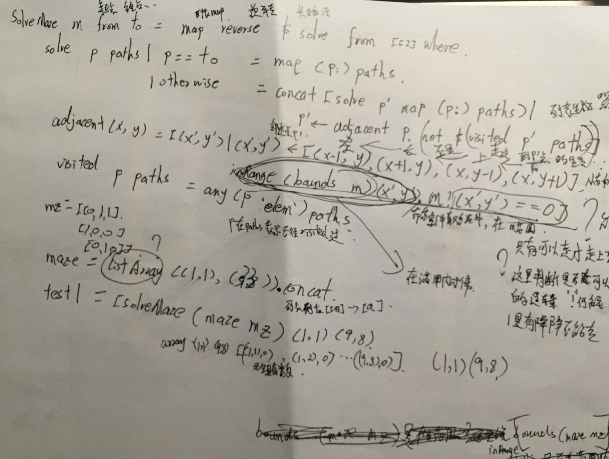
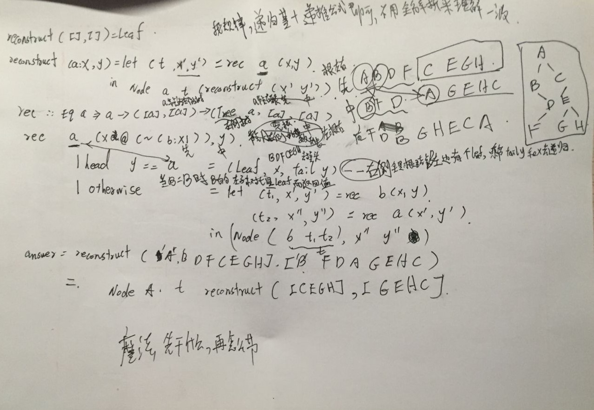
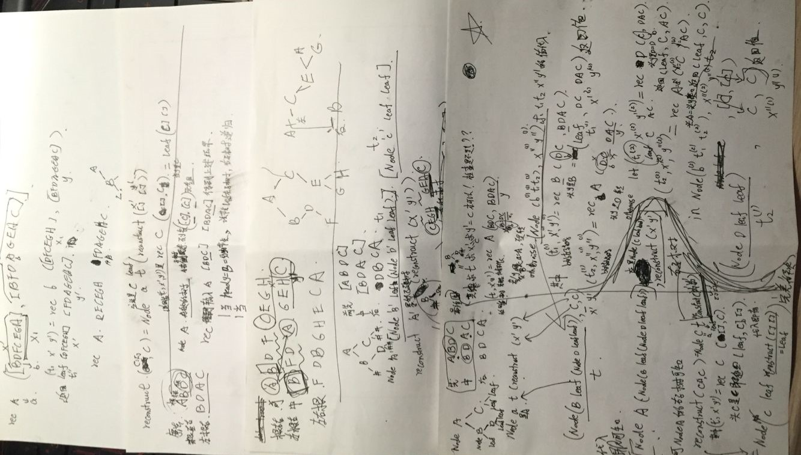
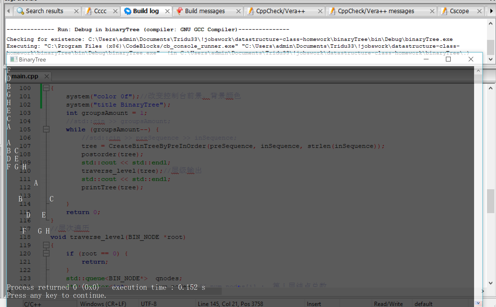

《数据结构》课程设计报告
《数据结构》课程设计报告问题解析（对问题的分析、解题思路与解题方法）：进度安排：数据结构选择（包括改进或给出）、算法设计：测试方法、测试数据与测试结果：程序的使用说明和效果图总结：（对程序进行分析、评价运行效果，总结遇到的问题及解决办法）参考论文编程实现方法与核心代码：
问题解析（对问题的分析、解题思路与解题方法）：
第2题、迷宫问题 以一个MxN的长方阵表示迷宫，0和1分别表示迷宫中的通路和障碍。设 计一个程序，对任意设定的迷宫，求出一条从入口到出口的通路，或得出没有通 路的结论。 (1) 根据二维数组，输出迷宫的图形。 (2) 探索迷宫的四个方向：RIGHT为向右，DOWN向下，LEFT向左，UP向 上，只输出从入口到出口的一条行走路径，而非全部路径。 [测试数据] 左上角（1，1)为入口，右下角（8，9)为出口。 0 0 1 0 0 0 1 0 0 0 1 0 0 0 1 0 0 0 1 0 1 1 0 1 0 1 1 1 0 0 1 0 0 0 0 1 0 0 0 0 0 1 0 0 0 1 0 1 0 1 1 1 1 0 0 1 1 1 0 0 0 1 0 1 1 1 0 0 0 0 0 0
[实现提示] 回溯法
第3题、构建二叉树 给定一棵二叉树的先根序列和中根序列（以字符串形式给出，串中每个字符 表示一个结点），编写程序构建该二叉树，输出二叉树的树形。 [测试数据] 输入：先根序列ABDFCEGH，中根序列BFDAGEHC 输出： A / \ B C \ / D E / / \ F G
进度安排：
断断续续，时做时停，不定。先完成的C++程序，然后研究学习钻研Haskell的设计。
数据结构选择（包括改进或给出）、算法设计：
第二题
分别用了C++和Haskell函数式编程语言[^1][^3][^4][^5]，源码见，Haskell很短，但是很难想清晰代码的意思，而且让我学会很多GHC-Win的Debug技巧。
主要讲讲Haskell实现吧。
下面注释写进去代码里面吧。
xmodule Maze whereimport Data.ArraysolveMaze maze startPoint endPoint = map reverse $ solve startPoint [[]] wheresolve pointVisiting pathsToEndpoint | pointVisiting == endPoint = map (pointVisiting:) pathsToEndpoint| otherwise = concat [solve pointAdjacent (map (pointVisiting:) pathsToEndpoint) |pointAdjacent <- adjacent pointVisiting, not $ visited pointAdjacent pathsToEndpoint]adjacent (x, y) = [(x', y') | (x', y') <- [(x-1, y), (x+1, y), (x, y-1), (x, y+1)],inRange (bounds maze) (x', y'), maze ! (x', y') == 0]visited pointVisiting pathsToEndpoint = any (elem pointVisiting) pathsToEndpoint{-数组path头插法效率高，所以基本都要reserse。sloveMaze:: Array (a1, b) a2 -> (a1, b) -> (a1, b) -> [[(a1, b)]]算法思路其实就是列表生成器遍历右左下上临近点，然后把满足合取条件“没访问过的临近点^不超出迷宫范围的点^迷宫位置==0没有障碍的点”不断地加入pathsToEndpointvisited函数判断点是否在已访问过的路径上，即判断是否在pathsToEndpoint里。-}mz1= [ [0,0,1,0,0,0,1,0],[0,0,1,0,0,0,1,0],[0,0,1,0,1,1,0,1],[0,1,1,1,0,0,1,0],[0,0,0,1,0,0,0,0],[0,1,0,0,0,1,0,1],[0,1,1,1,1,0,0,1],[1,1,0,0,0,1,0,1],[1,1,0,0,0,0,0,0]]mz0= [[0,0],[0,0]]maze1 = listArray ((1,1), (9, 8)) . concattest1 = [solveMaze (maze1 mz1) (1,1) (9,8)]test0 = [solveMaze ( (listArray ((1,1), (2, 2)) . concat) mz0) (1,1) (2,2)]main :: IO()main = print test1--main = print test0{-下面全部是注释maze mzarray ((1,1),(9,8)) [((1,1),0),((1,2),0),((1,3),1),((1,4),0),((1,5),0),((1,6),0),((1,7),1),((1,8),0),((2,1),0),((2,2),0),((2,3),1),((2,4),0),((2,5),0),((2,6),0),((2,7),1),((2,8),0),((3,1),0),((3,2),0),((3,3),1),((3,4),0),((3,5),1),((3,6),1),((3,7),0),((3,8),1),((4,1),0),((4,2),1),((4,3),1),((4,4),1),((4,5),0),((4,6),0),((4,7),1),((4,8),0),((5,1),0),((5,2),0),((5,3),0),((5,4),1),((5,5),0),((5,6),0),((5,7),0),((5,8),0),((6,1),0),((6,2),1),((6,3),0),((6,4),0),((6,5),0),((6,6),1),((6,7),0),((6,8),1),((7,1),0),((7,2),1),((7,3),1),((7,4),1),((7,5),1),((7,6),0),((7,7),0),((7,8),1),((8,1),1),((8,2),1),((8,3),0),((8,4),0),((8,5),0),((8,6),1),((8,7),0),((8,8),1),((9,1),1),((9,2),1),((9,3),0),((9,4),0),((9,5),0),((9,6),0),((9,7),0),((9,8),0)]*Maze Data.Array> test1[[[(1,1),(2,1), (3,1),(4,1),(5,1),(5,2),(5,3),(6,3),(6,4),(6,5),(5,5), (4,5),(4,6),(5,6),(5,7),(6,7), (7,7),(8,7),(9,7),(9,8)],[(1,1),(2,1), (3,1),(4,1),(5,1),(5,2),(5,3),(6,3),(6,4),(6,5),(5,5), (5,6),(5,7),(6,7), (7,7),(8,7),(9,7),(9,8)],[(1,1),(2,1),(2,2),(3,2), (3,1),(4,1),(5,1),(5,2),(5,3),(6,3),(6,4),(6,5),(5,5), (4,5),(4,6),(5,6),(5,7),(6,7), (7,7),(8,7),(9,7),(9,8)],[(1,1),(2,1),(2,2),(3,2), (3,1),(4,1),(5,1),(5,2),(5,3),(6,3),(6,4),(6,5),(5,5), (5,6),(5,7),(6,7), (7,7),(8,7),(9,7),(9,8)],[(1,1),(1,2),(2,2),(3,2), (3,1),(4,1),(5,1),(5,2),(5,3),(6,3),(6,4),(6,5),(5,5), (4,5),(4,6),(5,6),(5,7),(6,7), (7,7),(8,7),(9,7),(9,8)],[(1,1),(1,2),(2,2),(3,2), (3,1),(4,1),(5,1),(5,2),(5,3),(6,3),(6,4),(6,5),(5,5), (5,6),(5,7),(6,7), (7,7),(8,7),(9,7),(9,8)],[(1,1),(1,2),(2,2),(2,1), (3,1),(4,1),(5,1),(5,2),(5,3),(6,3),(6,4),(6,5),(5,5), (4,5),(4,6),(5,6),(5,7),(6,7), (7,7),(8,7),(9,7),(9,8)],[(1,1),(1,2),(2,2),(2,1), (3,1),(4,1),(5,1),(5,2),(5,3),(6,3),(6,4),(6,5),(5,5), (5,6),(5,7),(6,7), (7,7),(8,7),(9,7),(9,8)]]]*Maze Data.Array> test2=[solveMaze(tmp mz1)(1,1)(3,3)]*Maze Data.Array> test2[[]]命令行执行>ghci Maze.hsGHCi, version 8.6.3: http://www.haskell.org/ghc/ :? for help[1 of 1] Compiling Maze ( Maze.hs, interpreted )Ok, one module loaded.*Maze> test1[[[(1,1),(2,1),(3,1),(4,1),(5,1),(5,2),(5,3),(6,3),(6,4),(6,5),(5,5),(4,5),(4,6),(5,6),(5,7),(6,7),(7,7),(8,7),(9,7),(9,8)],[(1,1),(2,1),(3,1),(4,1),(5,1),(5,2),(5,3),(6,3),(6,4),(6,5),(5,5),(5,6),(5,7),(6,7),(7,7),(8,7),(9,7),(9,8)],[(1,1),(2,1),(2,2),(3,2),(3,1),(4,1),(5,1),(5,2),(5,3),(6,3),(6,4),(6,5),(5,5),(4,5),(4,6),(5,6),(5,7),(6,7),(7,7),(8,7),(9,7),(9,8)],[(1,1),(2,1),(2,2),(3,2),(3,1),(4,1),(5,1),(5,2),(5,3),(6,3),(6,4),(6,5),(5,5),(5,6),(5,7),(6,7),(7,7),(8,7),(9,7),(9,8)],[(1,1),(1,2),(2,2),(3,2),(3,1),(4,1),(5,1),(5,2),(5,3),(6,3),(6,4),(6,5),(5,5),(4,5),(4,6),(5,6),(5,7),(6,7),(7,7),(8,7),(9,7),(9,8)],[(1,1),(1,2),(2,2),(3,2),(3,1),(4,1),(5,1),(5,2),(5,3),(6,3),(6,4),(6,5),(5,5),(5,6),(5,7),(6,7),(7,7),(8,7),(9,7),(9,8)],[(1,1),(1,2),(2,2),(2,1),(3,1),(4,1),(5,1),(5,2),(5,3),(6,3),(6,4),(6,5),(5,5),(4,5),(4,6),(5,6),(5,7),(6,7),(7,7),(8,7),(9,7),(9,8)],[(1,1),(1,2),(2,2),(2,1),(3,1),(4,1),(5,1),(5,2),(5,3),(6,3),(6,4),(6,5),(5,5),(5,6),(5,7),(6,7),(7,7),(8,7),(9,7),(9,8)]]]-}手动eval草稿。

第三题
用了C++和Haskell函数式编程语言。
下面注释写进去代码绑定的名字里面了。
第一个函数reconstruct返回a左子树和a结点右边序列递归下去，reconstruct'函数则是递归处理a左子树和其他的列表字符串。
先序：中左右，中序：左中右。
head ifInorderArrayRightOfa == a时，说明递归出口。
xxxxxxxxxxmodule Reconstruct wheredata Tree a= Leaf| Node a (Tree a)(Tree a) deriving Showreconstruct :: Eq a=> ([a],[a]) -> Tree areconstruct ([],[])= Leafreconstruct (a:preorderArrayNoa,inorderArray)= let (treeLefta,preorderArrayRightOfa,inorderArrayRightOfa) = reconstruct' a (preorderArrayNoa,inorderArray)in Node a treeLefta (reconstruct(preorderArrayRightOfa,inorderArrayRightOfa))reconstruct' :: Eq a=>a -> ([a],[a])->(Tree a,[a],[a])reconstruct' a (preorderArrayGiven@(~(b:preorderArrayGivenNob)),ifInorderArrayRightOfa)| head ifInorderArrayRightOfa == a = (Leaf,preorderArrayGiven,tail ifInorderArrayRightOfa)| otherwise = let (treeLeftOfb,pre_tmp,in_tmp)=reconstruct' b (preorderArrayGivenNob,ifInorderArrayRightOfa)(treeRightOfb,preorderArray_Right,inorderArray_Right)=reconstruct' a (pre_tmp,in_tmp)in (Node b treeLeftOfb treeRightOfb, preorderArray_Right,inorderArray_Right)answer = reconstruct (['A','B','D','F','C','E','G','H'],['B','F','D','A','G','E','H','C'])preorder(Leaf) = []preorder(Node n t0 t1) = [n] ++ (preorder t0) ++ (preorder t1)test_pre=preorder (answer)inorder(Leaf) = []inorder(Node n t0 t1) = (inorder t0) ++ [n] ++ (inorder t1)test_in=inorder(answer)postorder(Leaf) = []postorder(Node n t0 t1) = (postorder t0) ++ (postorder t1) ++ [n]test_post=postorder(answer){-*Main> answerNode 'A' (Node 'B' Leaf (Node 'D' (Node 'F' Leaf Leaf) Leaf)) (Node 'C' (Node 'E' (Node 'G' Leaf Leaf) (Node 'H' Leaf Leaf)) Leaf)*Main> test_pre"ABDFCEGH"*Main> test_in"BFDAGEHC"*Main> test_post"FDBGHECA"-}prettyprint :: Show a => Tree a -> [Char]prettyprint (Leaf)= "Empty root."-- unlines concats a list with newlinesprettyprint (Node node left right) = unlines (prettyprint_helper (Node node left right))prettyprint_helper (Node node left right)= (show node) : (prettyprint_subtree left right)whereprettyprint_subtree left right =((pad "right- " "| ") (prettyprint_helper right))++ ((pad "left- " " ") (prettyprint_helper left))pad first rest = zipWith (++) (first : repeat rest)prettyprint_helper (Leaf)= []main :: IO ()main = putStrLn $ prettyprint (answer){-*Main> putStrLn $ prettyprint (answer)'A'+- 'C'| `- 'E'| +- 'H'| `- 'G'`- 'B'+- 'D'| `- 'F'-}{->ghci Reconstruct.hsGHCi, version 8.6.3: http://www.haskell.org/ghc/ :? for help[1 of 1] Compiling Main ( Reconstruct.hs, interpreted )Ok, one module loaded.*Main> putStrLn $ prettyprint (answer)'A'right- 'C'| left- 'E'| right- 'H'| left- 'G'left- 'B'right- 'D'| left- 'F'-}手动eval演算草稿。

注意，下图的例子举了图中的一颗小树，因为递归深度太多的话写不完。
第二第三题主要是Haskell解析起来有点长，有空写篇博客解析也可以,不过Haskell的好处是代码短，贴近数学语言，无缝对接翻译成数学语言[^2][^6][^7]。
Haskell代码本身就可以当成算法英文说明书，只是刚好程序代码文字凑巧能运行出代码罢了。
测试方法、测试数据与测试结果：
见代码注释部分，见说明，每个都有测试用例，如果不看代码，没有编译环境可以直接先看*.exe
程序的使用说明和效果图
第一题 C++程序注释写明,不多说了。
第二题
xxxxxxxxxx\deploy>ghc -main-is Maze Maze.hs -o Maze-haskell[1 of 1] Compiling Maze ( Maze.hs, Maze.o )Linking Maze-haskell.exe ...\deploy> Maze-haskell.exe[[[(1,1),(2,1),(3,1),(4,1),(5,1),(5,2),(5,3),(6,3),(6,4),(6,5),(5,5),(4,5),(4,6),(5,6),(5,7),(6,7),(7,7),(8,7),(9,7),(9,8)],[(1,1),(2,1),(3,1),(4,1),(5,1),(5,2),(5,3),(6,3),(6,4),(6,5),(5,5),(5,6),(5,7),(6,7),(7,7),(8,7),(9,7),(9,8)],[(1,1),(2,1),(2,2),(3,2),(3,1),(4,1),(5,1),(5,2),(5,3),(6,3),(6,4),(6,5),(5,5),(4,5),(4,6),(5,6),(5,7),(6,7),(7,7),(8,7),(9,7),(9,8)],[(1,1),(2,1),(2,2),(3,2),(3,1),(4,1),(5,1),(5,2),(5,3),(6,3),(6,4),(6,5),(5,5),(5,6),(5,7),(6,7),(7,7),(8,7),(9,7),(9,8)],[(1,1),(1,2),(2,2),(3,2),(3,1),(4,1),(5,1),(5,2),(5,3),(6,3),(6,4),(6,5),(5,5),(4,5),(4,6),(5,6),(5,7),(6,7),(7,7),(8,7),(9,7),(9,8)],[(1,1),(1,2),(2,2),(3,2),(3,1),(4,1),(5,1),(5,2),(5,3),(6,3),(6,4),(6,5),(5,5),(5,6),(5,7),(6,7),(7,7),(8,7),(9,7),(9,8)],[(1,1),(1,2),(2,2),(2,1),(3,1),(4,1),(5,1),(5,2),(5,3),(6,3),(6,4),(6,5),(5,5),(4,5),(4,6),(5,6),(5,7),(6,7),(7,7),(8,7),(9,7),(9,8)],[(1,1),(1,2),(2,2),(2,1),(3,1),(4,1),(5,1),(5,2),(5,3),(6,3),(6,4),(6,5),(5,5),(5,6),(5,7),(6,7),(7,7),(8,7),(9,7),(9,8)]]]
xxxxxxxxxx>ghci Maze.hsGHCi, version 8.6.3: http://www.haskell.org/ghc/ :? for help[1 of 1] Compiling Maze ( Maze.hs, interpreted )Ok, one module loaded.*Maze> test1[[[(1,1),(2,1),(3,1),(4,1),(5,1),(5,2),(5,3),(6,3),(6,4),(6,5),(5,5),(4,5),(4,6),(5,6),(5,7),(6,7),(7,7),(8,7),(9,7),(9,8)],[(1,1),(2,1),(3,1),(4,1),(5,1),(5,2),(5,3),(6,3),(6,4),(6,5),(5,5),(5,6),(5,7),(6,7),(7,7),(8,7),(9,7),(9,8)],[(1,1),(2,1),(2,2),(3,2),(3,1),(4,1),(5,1),(5,2),(5,3),(6,3),(6,4),(6,5),(5,5),(4,5),(4,6),(5,6),(5,7),(6,7),(7,7),(8,7),(9,7),(9,8)],[(1,1),(2,1),(2,2),(3,2),(3,1),(4,1),(5,1),(5,2),(5,3),(6,3),(6,4),(6,5),(5,5),(5,6),(5,7),(6,7),(7,7),(8,7),(9,7),(9,8)],[(1,1),(1,2),(2,2),(3,2),(3,1),(4,1),(5,1),(5,2),(5,3),(6,3),(6,4),(6,5),(5,5),(4,5),(4,6),(5,6),(5,7),(6,7),(7,7),(8,7),(9,7),(9,8)],[(1,1),(1,2),(2,2),(3,2),(3,1),(4,1),(5,1),(5,2),(5,3),(6,3),(6,4),(6,5),(5,5),(5,6),(5,7),(6,7),(7,7),(8,7),(9,7),(9,8)],[(1,1),(1,2),(2,2),(2,1),(3,1),(4,1),(5,1),(5,2),(5,3),(6,3),(6,4),(6,5),(5,5),(4,5),(4,6),(5,6),(5,7),(6,7),(7,7),(8,7),(9,7),(9,8)],[(1,1),(1,2),(2,2),(2,1),(3,1),(4,1),(5,1),(5,2),(5,3),(6,3),(6,4),(6,5),(5,5),(5,6),(5,7),(6,7),(7,7),(8,7),(9,7),(9,8)]]]第三题
xxxxxxxxxx>ghci Reconstruct.hsGHCi, version 8.6.3: http://www.haskell.org/ghc/ :? for help[1 of 1] Compiling Main ( Reconstruct.hs, interpreted )Ok, one module loaded.*Main> putStrLn $ prettyprint (answer)'A'right- 'C'| left- 'E'| right- 'H'| left- 'G'left- 'B' right- 'D' | left- 'F'编译成exe的话是这样子的
xxxxxxxxxx\deploy>ghc -main-is Reconstruct Reconstruct.hs -o Reconstruct-haskell[1 of 1] Compiling Reconstruct ( Reconstruct.hs, Reconstruct.o )Linking Reconstruct-haskell.exe ...\deploy>Reconstruct-haskell.exe'A'right- 'C'| left- 'E'| right- 'H'| left- 'G'left- 'B' right- 'D' | left- 'F'系列效果图
C++

Haskell


C++程序使用codeblock开发，
直接用codeblock能编译，
mingGW也能编译，
G++ *.cpp也能编译。
Haskell使用windows下的Haskell Plaform
WinGHC能够直接编译运行
也能GHCi调试运行
或者ghc *.hs编译可以运行。
源代码文件作者用Emacs编辑时，发现用Emacs看中文注释会乱码,还很卡，不过胜在写小文件方便。
Haskell简单的英文注释格式是：
“—一行注释”
“{-一段注释-}”
总结：
（对程序进行分析、评价运行效果，总结遇到的问题及解决办法）
第二题，用了C++和Haskell函数式编程语言，源码见上，Haskell很短，但是很难想出来代码的意思，而且让我学会很多GHC-Win的Debug技巧。
下图WinGHC里排版不好，整理下换行可见一共有多少种迷宫算法求解方案。
xxxxxxxxxx[[[(1,1),(2,1), (3,1),(4,1),(5,1),(5,2),(5,3),(6,3),(6,4),(6,5),(5,5), (4,5),(4,6),(5,6),(5,7),(6,7), (7,7),(8,7),(9,7),(9,8)],[(1,1),(2,1), (3,1),(4,1),(5,1),(5,2),(5,3),(6,3),(6,4),(6,5),(5,5), (5,6),(5,7),(6,7), (7,7),(8,7),(9,7),(9,8)],[(1,1),(2,1),(2,2),(3,2), (3,1),(4,1),(5,1),(5,2),(5,3),(6,3),(6,4),(6,5),(5,5), (4,5),(4,6),(5,6),(5,7),(6,7), (7,7),(8,7),(9,7),(9,8)],[(1,1),(2,1),(2,2),(3,2), (3,1),(4,1),(5,1),(5,2),(5,3),(6,3),(6,4),(6,5),(5,5), (5,6),(5,7),(6,7), (7,7),(8,7),(9,7),(9,8)],[(1,1),(1,2),(2,2),(3,2), (3,1),(4,1),(5,1),(5,2),(5,3),(6,3),(6,4),(6,5),(5,5), (4,5),(4,6),(5,6),(5,7),(6,7), (7,7),(8,7),(9,7),(9,8)],[(1,1),(1,2),(2,2),(3,2), (3,1),(4,1),(5,1),(5,2),(5,3),(6,3),(6,4),(6,5),(5,5), (5,6),(5,7),(6,7), (7,7),(8,7),(9,7),(9,8)],[(1,1),(1,2),(2,2),(2,1), (3,1),(4,1),(5,1),(5,2),(5,3),(6,3),(6,4),(6,5),(5,5), (4,5),(4,6),(5,6),(5,7),(6,7), (7,7),(8,7),(9,7),(9,8)],[(1,1),(1,2),(2,2),(2,1), (3,1),(4,1),(5,1),(5,2),(5,3),(6,3),(6,4),(6,5),(5,5), (5,6),(5,7),(6,7), (7,7),(8,7),(9,7),(9,8)]]]xxxxxxxxxxmodule Maze whereimport Data.ArraysolveMaze maze startPoint endPoint = map reverse $ solve startPoint [[]] where solve pointVisiting pathsToEndpoint | pointVisiting == endPoint = map (pointVisiting:) pathsToEndpoint | otherwise = concat [solve pointAdjacent (map (pointVisiting:) pathsToEndpoint) | pointAdjacent <- adjacent pointVisiting, not $ visited pointAdjacent pathsToEndpoint] adjacent (x, y) = [(x', y') | (x', y') <- [(x-1, y), (x+1, y), (x, y-1), (x, y+1)], inRange (bounds maze) (x', y'), maze ! (x', y') == 0] visited pointVisiting pathsToEndpoint = any (pointVisiting `elem`) pathsToEndpointmz1= [ [0,0,1,0,0,0,1,0], [0,0,1,0,0,0,1,0], [0,0,1,0,1,1,0,1], [0,1,1,1,0,0,1,0], [0,0,0,1,0,0,0,0], [0,1,0,0,0,1,0,1], [0,1,1,1,1,0,0,1], [1,1,0,0,0,1,0,1], [1,1,0,0,0,0,0,0]]mz0= [[0,0], [0,0]]maze1 = listArray ((1,1), (9, 8)) . concattest1 = [solveMaze (maze1 mz1) (1,1) (9,8)]test0 = [solveMaze ( (listArray ((1,1), (2, 2)) . concat) mz0) (1,1) (2,2)]main :: IO()main = print test1--main = print test0{-下面全部是注释maze mzarray ((1,1),(9,8)) [((1,1),0),((1,2),0),((1,3),1),((1,4),0),((1,5),0),((1,6),0),((1,7),1),((1,8),0),((2,1),0),((2,2),0),((2,3),1),((2,4),0),((2,5),0),((2,6),0),((2,7),1),((2,8),0),((3,1),0),((3,2),0),((3,3),1),((3,4),0),((3,5),1),((3,6),1),((3,7),0),((3,8),1),((4,1),0),((4,2),1),((4,3),1),((4,4),1),((4,5),0),((4,6),0),((4,7),1),((4,8),0),((5,1),0),((5,2),0),((5,3),0),((5,4),1),((5,5),0),((5,6),0),((5,7),0),((5,8),0),((6,1),0),((6,2),1),((6,3),0),((6,4),0),((6,5),0),((6,6),1),((6,7),0),((6,8),1),((7,1),0),((7,2),1),((7,3),1),((7,4),1),((7,5),1),((7,6),0),((7,7),0),((7,8),1),((8,1),1),((8,2),1),((8,3),0),((8,4),0),((8,5),0),((8,6),1),((8,7),0),((8,8),1),((9,1),1),((9,2),1),((9,3),0),((9,4),0),((9,5),0),((9,6),0),((9,7),0),((9,8),0)]*Maze Data.Array> test1[[[(1,1),(2,1), (3,1),(4,1),(5,1),(5,2),(5,3),(6,3),(6,4),(6,5),(5,5), (4,5),(4,6),(5,6),(5,7),(6,7), (7,7),(8,7),(9,7),(9,8)],[(1,1),(2,1), (3,1),(4,1),(5,1),(5,2),(5,3),(6,3),(6,4),(6,5),(5,5), (5,6),(5,7),(6,7), (7,7),(8,7),(9,7),(9,8)],[(1,1),(2,1),(2,2),(3,2), (3,1),(4,1),(5,1),(5,2),(5,3),(6,3),(6,4),(6,5),(5,5), (4,5),(4,6),(5,6),(5,7),(6,7), (7,7),(8,7),(9,7),(9,8)],[(1,1),(2,1),(2,2),(3,2), (3,1),(4,1),(5,1),(5,2),(5,3),(6,3),(6,4),(6,5),(5,5), (5,6),(5,7),(6,7), (7,7),(8,7),(9,7),(9,8)],[(1,1),(1,2),(2,2),(3,2), (3,1),(4,1),(5,1),(5,2),(5,3),(6,3),(6,4),(6,5),(5,5), (4,5),(4,6),(5,6),(5,7),(6,7), (7,7),(8,7),(9,7),(9,8)],[(1,1),(1,2),(2,2),(3,2), (3,1),(4,1),(5,1),(5,2),(5,3),(6,3),(6,4),(6,5),(5,5), (5,6),(5,7),(6,7), (7,7),(8,7),(9,7),(9,8)],[(1,1),(1,2),(2,2),(2,1), (3,1),(4,1),(5,1),(5,2),(5,3),(6,3),(6,4),(6,5),(5,5), (4,5),(4,6),(5,6),(5,7),(6,7), (7,7),(8,7),(9,7),(9,8)],[(1,1),(1,2),(2,2),(2,1), (3,1),(4,1),(5,1),(5,2),(5,3),(6,3),(6,4),(6,5),(5,5), (5,6),(5,7),(6,7), (7,7),(8,7),(9,7),(9,8)]]]*Maze Data.Array> test2=[solveMaze(tmp mz1)(1,1)(3,3)]*Maze Data.Array> test2[[]]命令行执行>ghci Maze.hsGHCi, version 8.6.3: http://www.haskell.org/ghc/ :? for help[1 of 1] Compiling Maze ( Maze.hs, interpreted )Ok, one module loaded.*Maze> test1[[[(1,1),(2,1),(3,1),(4,1),(5,1),(5,2),(5,3),(6,3),(6,4),(6,5),(5,5),(4,5),(4,6),(5,6),(5,7),(6,7),(7,7),(8,7),(9,7),(9,8)],[(1,1),(2,1),(3,1),(4,1),(5,1),(5,2),(5,3),(6,3),(6,4),(6,5),(5,5),(5,6),(5,7),(6,7),(7,7),(8,7),(9,7),(9,8)],[(1,1),(2,1),(2,2),(3,2),(3,1),(4,1),(5,1),(5,2),(5,3),(6,3),(6,4),(6,5),(5,5),(4,5),(4,6),(5,6),(5,7),(6,7),(7,7),(8,7),(9,7),(9,8)],[(1,1),(2,1),(2,2),(3,2),(3,1),(4,1),(5,1),(5,2),(5,3),(6,3),(6,4),(6,5),(5,5),(5,6),(5,7),(6,7),(7,7),(8,7),(9,7),(9,8)],[(1,1),(1,2),(2,2),(3,2),(3,1),(4,1),(5,1),(5,2),(5,3),(6,3),(6,4),(6,5),(5,5),(4,5),(4,6),(5,6),(5,7),(6,7),(7,7),(8,7),(9,7),(9,8)],[(1,1),(1,2),(2,2),(3,2),(3,1),(4,1),(5,1),(5,2),(5,3),(6,3),(6,4),(6,5),(5,5),(5,6),(5,7),(6,7),(7,7),(8,7),(9,7),(9,8)],[(1,1),(1,2),(2,2),(2,1),(3,1),(4,1),(5,1),(5,2),(5,3),(6,3),(6,4),(6,5),(5,5),(4,5),(4,6),(5,6),(5,7),(6,7),(7,7),(8,7),(9,7),(9,8)],[(1,1),(1,2),(2,2),(2,1),(3,1),(4,1),(5,1),(5,2),(5,3),(6,3),(6,4),(6,5),(5,5),(5,6),(5,7),(6,7),(7,7),(8,7),(9,7),(9,8)]]]-}
第三题，用了C++和Haskell函数式编程语言，源码见上，Haskell真的是很本质的抽象，感觉更加贴近算法本身逻辑。
命令行执行
xxxxxxxxxx>ghci Reconstruct.hsGHCi, version 8.6.3: http://www.haskell.org/ghc/ :? for help[1 of 1] Compiling Main ( Reconstruct.hs, interpreted )Ok, one module loaded.*Main> putStrLn $ prettyprint (answer)'A'right- 'C'| left- 'E'| right- 'H'| left- 'G'left- 'B' right- 'D' | left- 'F'代码
xxxxxxxxxxmodule Reconstruct wheredata Tree a = Leaf | Node a (Tree a)(Tree a) deriving Show reconstruct :: Eq a=> ([a],[a]) -> Tree areconstruct ([],[])= Leafreconstruct (a:x,y)= let (t,x',y') = rec a (x,y) in Node a t (reconstruct(x',y'))rec :: Eq a=>a -> ([a],[a])->(Tree a,[a],[a])rec a (x@(~(b:x1)),y) | head y == a = (Leaf,x,tail y) | otherwise = let (t1,x',y')=rec b (x1,y) (t2,x'',y'')=rec a (x',y') in (Node b t1 t2, x'',y'')answer = reconstruct (['A','B','D','F','C','E','G','H'],['B','F','D','A','G','E','H','C'])preorder(Leaf) = []preorder(Node n t0 t1) = [n] ++ (preorder t0) ++ (preorder t1)test_pre=preorder (answer)inorder(Leaf) = []inorder(Node n t0 t1) = (inorder t0) ++ [n] ++ (inorder t1)test_in=inorder(answer)postorder(Leaf) = []postorder(Node n t0 t1) = (postorder t0) ++ (postorder t1) ++ [n]test_post=postorder(answer){-*Main> answerNode 'A' (Node 'B' Leaf (Node 'D' (Node 'F' Leaf Leaf) Leaf)) (Node 'C' (Node 'E' (Node 'G' Leaf Leaf) (Node 'H' Leaf Leaf)) Leaf)*Main> test_pre"ABDFCEGH"*Main> test_in"BFDAGEHC"*Main> test_post"FDBGHECA"-}prettyprint :: Show a => Tree a -> [Char]prettyprint (Leaf) = "Empty root."-- unlines concats a list with newlinesprettyprint (Node node left right) = unlines (prettyprint_helper (Node node left right))prettyprint_helper (Node node left right) = (show node) : (prettyprint_subtree left right) where prettyprint_subtree left right = ((pad "right- " "| ") (prettyprint_helper right)) ++ ((pad "left- " " ") (prettyprint_helper left)) pad first rest = zipWith (++) (first : repeat rest)prettyprint_helper (Leaf) = []main :: IO ()main = putStrLn $ prettyprint (answer){-*Main> putStrLn $ prettyprint (answer)'A'+- 'C'| `- 'E'| +- 'H'| `- 'G'`- 'B' +- 'D' | `- 'F'-}{->ghci Reconstruct.hsGHCi, version 8.6.3: http://www.haskell.org/ghc/ :? for help[1 of 1] Compiling Main ( Reconstruct.hs, interpreted )Ok, one module loaded.*Main> putStrLn $ prettyprint (answer)'A'right- 'C'| left- 'E'| right- 'H'| left- 'G'left- 'B' right- 'D' | left- 'F'-}参考论文
编程实现方法与核心代码：
第二题C++代码
xxxxxxxxxxusing namespace std;int success = 0;/******************寻找路径函数*******************************/int findpath(int i,int j ,int endRow,int endCol,int** maze,int n ,int m);/****************走迷宫maze:N*M*********************************/void showMaze(int startRow,int startCol,int endRow,int endCol,int** maze,int n,int m){ cout<<"迷宫示意图如下所示："<<endl; for(int i=0;i<n;i++){ for(int j=0;j<m;j++){ if(maze[i][j]==1){ cout<<"█"; }else{ cout<<" "; } } cout<<endl; } if (findpath(startRow,startCol,endRow,endCol,maze,n,m)==0){ cout<<"没有出口"<<endl; }else { cout<<""<<endl; for (int i=0;i<n;i++){ for(int j=0;j<m;j++){ if(maze[i][j]==1){ cout<<"█"; }else if(maze[i][j]==2){ cout<<"◇"; }else{ cout<<" "; } } cout<<endl; } }}/******************i，j当前位置startRow,startCol起点坐标，endRow，endCol终点位置*******************************//*********************展示迷宫函数showMaze****************************/ int findpath(int i,int j,int endRow,int endCol,int** maze ,int n,int m){ maze[i][j]=2; if (i==endRow && j==endCol){ success=1; return success; }else {/***************************寻找出口路径findPath**********************//*****************其中,j表示当前位置坐标，endRow,endCol表示出口路径********************************//************************递归检查当前格子的相邻四个方向上的格子是否能走*************************/ if (i<n-1 && j<m-2 && maze[i][j+1] == 0&& success!=1) findpath(i,j+1,endRow,endCol,maze,n,m);//right if (i<n-2 && j<m-1 && maze[i+1][j] == 0&& success!=1) findpath(i+1,j,endRow,endCol,maze,n,m);//down if (i<n-1 && j>1 && maze[i][j-1] == 0&& success!=1) findpath(i,j-1,endRow,endCol,maze,n,m);//left if (i>1 && j<m-1 && maze[i-1][j] == 0&& success!=1) findpath(i-1,j,endRow,endCol,maze,n,m); //up if(success !=1) maze[i][j]=0;//0没走过，1不能走，2走过了 return success; } }/*********************测试主函数main****************************/int main(){ cout << "请输入迷宫的行数N和列数M\n" << endl; int n,m; cin>>n>>m; int** maze = new int* [n]; for(int i=0;i<n;i++){ maze[i]=new int[m]; } cout<<"请输入迷宫，1表示墙壁，0表示行走的通道"<<endl; for(int i=0;i<n;i++){ for(int j=0;j<m;j++){ cin>>maze[i][j]; } } int startRow,startCol,endRow,endCol; cout<<"请输入迷宫的入口坐标："<<endl; cin>>startRow>>startCol; cout<<"请输入迷宫的出口坐标:"<<endl; cin>>endRow>>endCol; showMaze(startRow,startCol,endRow,endCol,maze,n,m); return 0;}/*请输入迷宫的行数N和列数M4 4请输入迷宫，1表示墙壁，0表示行走的通道1 1 1 11 0 0 11 1 0 11 1 1 1请输入迷宫的入口坐标：1 1请输入迷宫的出口坐标:2 2迷宫示意图如下所示： # # # # # # # # # # # # # # # # # # @ @ # # # @ # # # # # 请输入迷宫的行数N和列数M11 10请输入迷宫，1表示墙壁，0表示行走的通道1 1 1 1 1 1 1 1 1 11 0 0 1 0 0 0 1 0 11 0 0 1 0 0 0 1 0 11 0 0 1 0 1 1 0 1 11 0 1 1 1 0 0 1 0 11 0 0 0 1 0 0 0 0 11 0 1 0 0 0 1 0 1 11 0 1 1 1 1 0 0 1 11 1 1 0 0 0 1 0 1 11 1 1 0 0 0 0 0 0 11 1 1 1 1 1 1 1 1 1请输入迷宫的入口坐标：1 1请输入迷宫的出口坐标:9 8注：这里PDF是8 9 行列式M行N列，和一般习惯的不一样，编程总忘记，看着很难受，我写的时候把行列换回来。迷宫示意图如下所示： # # # # # # # # # # # # # # # # # # # # # # # # # # # # # # # # # # # # # # # # # # # # # # # # # # # # # # # # # # # # # # # # # # # # # # # # # # # # @ @ # # # # @ # # # # @ @ # # # # # # @ # # # # # # @ @ @ # @ @ @ # # # @ @ @ # @ # # # # # # # @ # # # # # # @ # # # # # @ @ # # # # # # # # # # #*/第三题C++代码
xxxxxxxxxx/**已知前序遍历序列和中序遍历序列建立二叉树*并求其后序遍历序列和层序遍历序列*///二叉树节点结构定义struct BIN_NODE { char data; BIN_NODE *leftChild, *rightChild;};using namespace std;int PrintTree_h_height;char PrintTree_h_buffer[6][128];int PrintTree_h_x;int PrintTree_h_treeHeight(BIN_NODE* tree){ if (tree == NULL) return 0; int heightLeft = PrintTree_h_treeHeight(tree->leftChild); int heightRight = PrintTree_h_treeHeight(tree->rightChild); return MAX(heightLeft, heightRight) + 1;}void PrintTree_h_corePrintTree(BIN_NODE* tree, int level){ if (tree == NULL){ PrintTree_h_x += (pow(2, PrintTree_h_height - level) - 1); return; } char(*a)[128] = PrintTree_h_buffer; PrintTree_h_corePrintTree(tree->leftChild, level + 1); a[level][PrintTree_h_x++] = tree->data; PrintTree_h_corePrintTree(tree->rightChild, level + 1);}void printTree(BIN_NODE* tree){ if (tree == NULL) return; char(*a)[128] = PrintTree_h_buffer; for (int i = 0; i<6; i++){ for (int j = 0; j<128; j++){ a[i][j] = INF; } } //先获取树高度 PrintTree_h_height = PrintTree_h_treeHeight(tree); if (PrintTree_h_height > 6){ cout << "树超过6层，无法打印" << endl; return; } PrintTree_h_corePrintTree(tree, 0); for (int i = 0; i < 6; i++){ for (int j = 0; j < 128; j++){ if (a[i][j] == INF) cout << " "; else cout << a[i][j]; } cout << endl; }}char *preSequence = "ABDFCEGH";char* inSequence = "BFDAGEHC";//树根定义BIN_NODE *tree;//存储下一层节点的队列std::queue<BIN_NODE *> memoryNextLevel;//函数声明void PrintBinTreeByPostOrder(BIN_NODE *subTree); //后序打印二叉树数据域void PrintBinTreeByLevelOrder(BIN_NODE *subTree); //层序打印二叉树数据域//通过前序、中序序列建立二叉树void postorder(BIN_NODE* t);void traverse_level(BIN_NODE *root);BIN_NODE * CreateBinTreeByPreInOrder(char* preSeq, char* InSeq, int subStrLen);int main(){ int groupsAmount = 1; //std::cin >> groupsAmount; while (groupsAmount--) { //std::cin >> preSequence >> inSequence; tree = CreateBinTreeByPreInOrder(preSequence, inSequence, strlen(inSequence)); postorder(tree); std::cout << std::endl; traverse_level(tree);//层级输出 std::cout << std::endl; printTree(tree); } return 0;}//层次遍历void traverse_level(BIN_NODE *root){ if (root == 0) { return; } std::queue<BIN_NODE*> qnodes; std::vector<int> num_nodes; // num_nodes[i] : 第ｉ层结点总数 num_nodes.push_back(1); // 第0层结点个数 num_nodes.push_back(0); int n = 0, depth = 0; for (qnodes.push(root); !qnodes.empty(); qnodes.pop()) { BIN_NODE*temp = qnodes.front(); std::cout << temp->data << " "; if (temp->leftChild) { qnodes.push(temp->leftChild); num_nodes[depth+1]++; } if (temp->rightChild) { qnodes.push(temp->rightChild); num_nodes[depth+1]++; } // 当前层最后一个节点 if (++n == num_nodes[depth]) { n = 0; depth++; num_nodes.push_back(0); std::cout << std::endl; } }}//二叉树的后序遍历void postorder(BIN_NODE* t){ if(t) { postorder(t->leftChild); postorder(t->rightChild); std::cout<<t->data<<std::endl; }}BIN_NODE * CreateBinTreeByPreInOrder(char* preSeq, char* InSeq, int subStrLen) { if (0 == subStrLen) { return NULL; } BIN_NODE *node = new BIN_NODE; if (node == NULL) { std::cerr << "error" << std::endl; exit(1); } node->data = *preSeq; //前序相应元素在中序中的下标索引值 int rootIndex = 0; //求解这个索引值 for (; rootIndex < subStrLen; rootIndex ++) { if (InSeq[rootIndex] == *preSeq) { break; } } node->leftChild = CreateBinTreeByPreInOrder(preSeq + 1, InSeq, rootIndex); node->rightChild = CreateBinTreeByPreInOrder(preSeq + rootIndex + 1, InSeq + rootIndex + 1, subStrLen - (rootIndex + 1)); return node;}